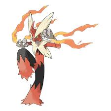
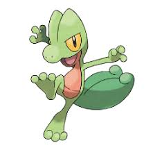

|  | A Blaziken es fácil verle echándose una partida al fortnite. La facilidad que tiene en el manejo del mando es asombroso, como teclea señores.. |
|
|
|  | A Treecko le encanta dar paseos por la montaña en busca de ranas y amigotes para hacerse unas buenas fiestas con todo pagado por supuesto , tiene una lagartolimusina la cual lo lleva por todo el bosque sin tener que dar ni un paso. |
|